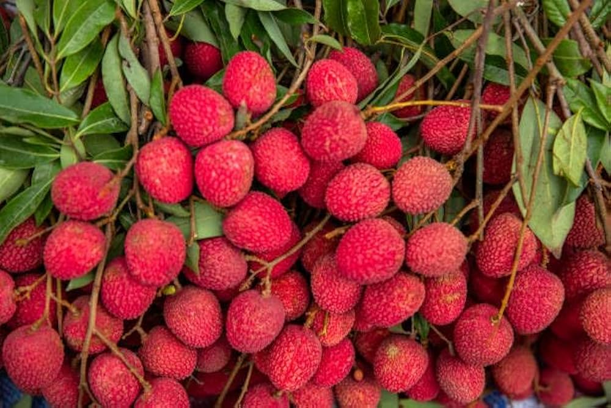
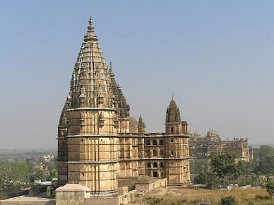
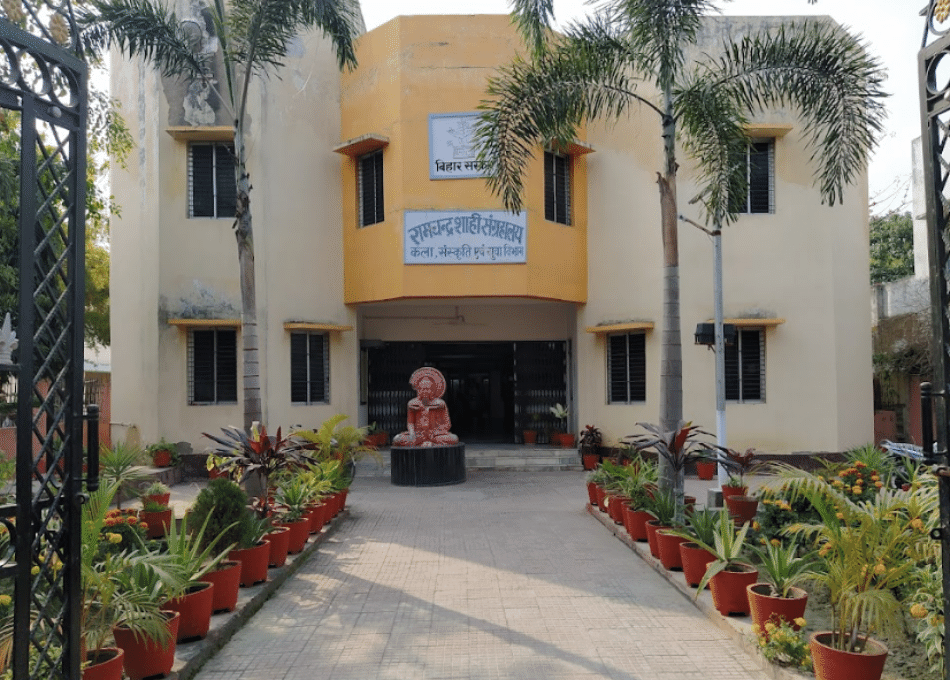

Explore Muzaffarpur
Why Visit Muzaffarpur?
Muzaffarpur is popularly known as the "Land of Shahi Litchi", exporting its delicious fruit across the globe. Beyond litchis, the city holds historical, cultural, and natural significance, making it a wonderful destination for travelers seeking a mix of taste and tradition.
Best Time to Visit
May to July: Litchi season, best for fruit lovers.
October to March: Pleasant weather for sightseeing and festivals.
Top Places to Visit in Muzaffarpur
- Litchi Gardens: Visit orchards during the harvest season for fresh, juicy litchis and nature photography.
- Baba Garib Nath Temple: A revered Shiva temple in the heart of the city, attracting thousands of devotees.
- Ram Chandra Shahi Museum: A colonial-era museum with rare art pieces, coins, and historical artifacts.
- Katra Garh Fort: A hidden historical site perfect for exploring the city's past.
- Jubba Sahni Park: A peaceful retreat named after a freedom fighter, ideal for families and kids.
Local Homestays & Stays
- Hotel Litchi Garden Inn: A modern hotel surrounded by litchi trees, great for a fresh countryside vibe.
- Browse more stays in Muzaffarpur
How to Reach Muzaffarpur
- By Train: Well-connected with Patna, Delhi, Kolkata, and other major cities.
- By Road: 70 km from Patna, easily accessible via NH27.
- Nearest Airport: Patna Airport (70 km), Darbhanga Airport (60 km). Book your ticket now
Explore on Map
Gallery
Why Muzaffarpur's Litchi is Famous
Muzaffarpur's Shahi Litchi is renowned for its juicy sweetness, rosy skin, and unique flavor. It holds a GI (Geographical Indication) tag and is a symbol of the region's pride and economy.


